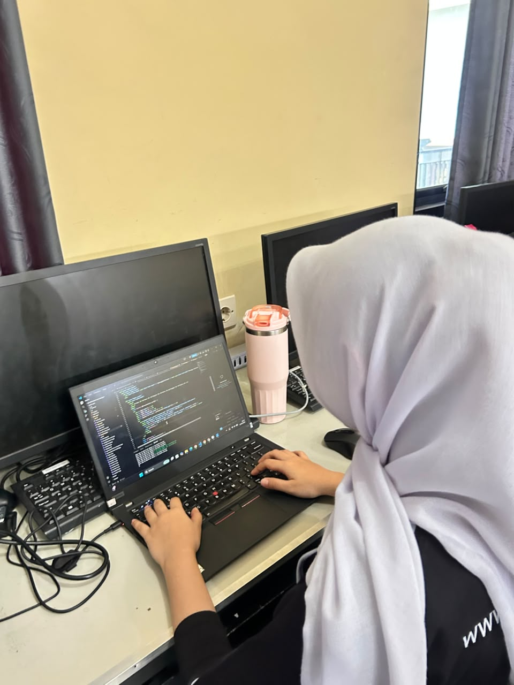
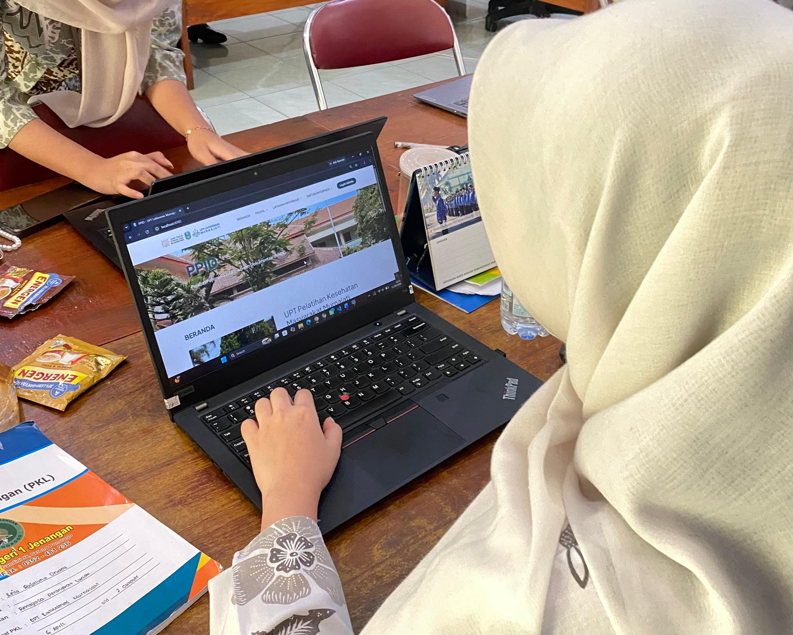
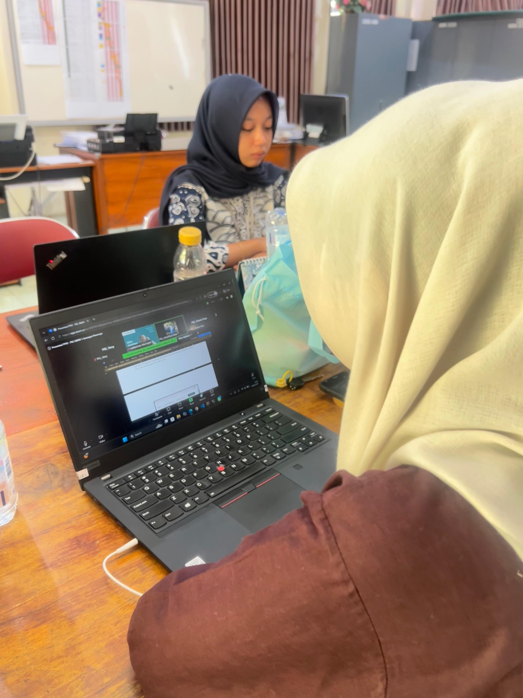

Personal Portfolio Website
Website portofolio pribadi untuk menampilkan profil, keahlian, pengalaman, dan hasil proyek dalam tampilan yang sederhana dan responsif.
HTML, CSS, JavaScript
Leila Rafaluna Devany.
Uji Sertifikasi Kompetensi — Skema Junior Web Developer
Junior Web Developer — front-end, back-end, dan pengelolaan database.
Saya membangun website yang rapi, fungsional, dan terstruktur. Saat ini saya mendalami pengembangan web dari sisi tampilan sampai pengelolaan data, lewat proyek nyata dan pengalaman praktik di bidang teknologi.

Latar belakang singkat dan cara saya bekerja.
Saya siswa Rekayasa Perangkat Lunak yang tertarik pada pengembangan web. Kemampuan saya bangun lewat pembelajaran, proyek, dan pengalaman praktik — dengan perhatian pada tampilan, responsivitas, dan pengalaman pengguna.
Peran, instansi, dan bidang yang saya tekuni.
Memiliki kemampuan dasar dalam pengembangan website, baik front-end maupun back-end, serta terus mengembangkan keterampilan melalui berbagai proyek dan pengalaman praktik.
Pendidikan dan pengalaman, dari yang terbaru.
2024 — sekarang
Jurusan Rekayasa Perangkat Lunak.
2021 — 2024
2015 — 2021
Praktik Kerja Lapangan
Mengembangkan website PPID menggunakan PHP dengan framework CodeIgniter 4. Berkontribusi dalam pembuatan database, antarmuka website, fitur CRUD informasi publik, form permohonan informasi dan keberatan, serta pengujian sistem.
Uji Kompetensi Junior Web Developer
Mengikuti Uji Kompetensi sebagai Junior Web Developer dengan mengerjakan proyek website, mulai dari perancangan tampilan, pembuatan fitur, pengelolaan database, hingga pengujian dan penyelesaian website sesuai kebutuhan.
Teknologi yang saya pakai untuk membangun website.
Membangun tampilan website yang terstruktur, responsif, dan nyaman digunakan.
Mengembangkan interaksi dan fitur dinamis pada website.
Membuat fitur berbasis server serta mengelola dan mengolah data dalam database.
Membangun REST API dan mengembangkan fungsi backend dasar.
Mengelola database serta melakukan operasi CRUD pada data.
Mengelola kode program dan mendukung proses pengembangan proyek.
Karya yang saya kerjakan sendiri maupun selama praktik.
Website portofolio pribadi untuk menampilkan profil, keahlian, pengalaman, dan hasil proyek dalam tampilan yang sederhana dan responsif.
HTML, CSS, JavaScript
Website toko rajut dengan katalog produk, filter kategori, halaman detail produk, keranjang belanja, form kontak, serta panel admin untuk mengelola produk, kategori, pesanan, dan laporan penjualan.
PHP, PostgreSQL, HTML, CSS, JavaScript
Kunjungi websiteWebsite Pejabat Pengelola Informasi dan Dokumentasi (PPID) untuk UPT Latkesmas Murnajati, dikerjakan selama masa Praktik Kerja Lapangan.
PHP (CodeIgniter 4), CSS
Klik "Lihat" untuk membuka dokumen aslinya.
Sertifikat Praktik Kerja Lapangan
Pelatihan Digitalent
Kunjungan Industri
Pelatihan dan kegiatan belajar yang saya ikuti.

Pelatihan
Kegiatan uji kompetensi untuk mengukur kemampuan dalam pengembangan website, mulai dari pembuatan antarmuka, pengelolaan database, hingga penerapan fitur website secara fungsional.

Kegiatan belajar
Membuat dan mengembangkan website PPID selama kegiatan PKL di UPT Latkesmas Murnajati menggunakan CodeIgniter 4 dan PHP, termasuk pembuatan database, fitur CRUD informasi publik, serta form permohonan informasi dan keberatan.

Kegiatan
Melakukan presentasi hasil pengembangan website PPID yang telah dibuat selama pelaksanaan PKL di UPT Latkesmas Murnajati. Kegiatan ini mencakup penjelasan mengenai fitur, tampilan, dan cara kerja website kepada pembimbing.
Catatan belajar yang saya bagikan.
Proyek
Proses membuat website toko online Lalunaco, mulai dari merancang tampilan hingga membuat fitur produk, keranjang, checkout, dan pengelolaan pesanan.
Baca selengkapnyaPengalaman
Pengalaman mengembangkan website PPID di UPT Latkesmas Murnajati, mulai dari memahami kebutuhan, membuat fitur, mengelola database, hingga mempresentasikan hasil website.
Baca selengkapnya